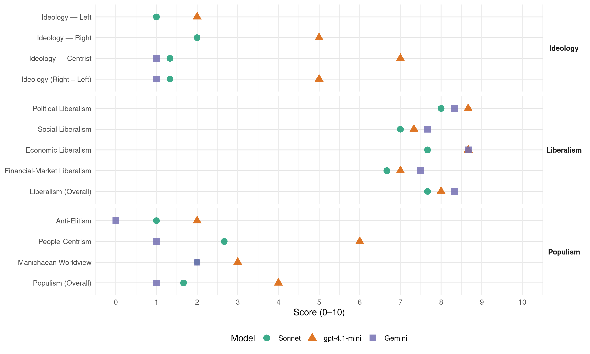

National (New Zealand, 1969)
manifesto_id 64620_196911
Get full text: This site shows derived annotations and short verbatim quotes only. The full manifesto text is © Manifesto Project / WZB — obtain it via manifesto-project.wzb.eu using the manifesto_id above.
Headline scores
| Dimension | Sonnet | gpt-4.1-mini | Gemini |
|---|---|---|---|
| Populism (Overall) | 1.7 | 4.0 | 1.0 |
| Anti-Elitism | 1.0 | 2.0 | 0.0 |
| People-Centrism | 2.7 | 6.0 | 1.0 |
| Manichaean Worldview | 2.0 | 3.0 | 2.0 |
| Ideology (Right − Left) | 1.3 | 5.0 | 1.0 |
| Liberalism (Overall) | 7.7 | 8.0 | 8.3 |
| Political Liberalism | 8.0 | 8.7 | 8.3 |
| Social Liberalism | 7.0 | 7.3 | 7.7 |
| Economic Liberalism | 7.7 | 8.7 | 8.7 |
| Financial-Market Liberalism | 6.7 | 7.0 | 7.5 |
Evidence per dimension
Economic Liberalism
Gemini · score 9.0 · verified · chunk 1
“growth of private enterprise”
To encourage the growth of private enterprise with healthy competition
Gemini · score 9.0 · verified · chunk 2
“private competitive enterprise with a minimum of regulation”
A basic principle is that most effective industrial development can be best achieved by private competitive enterprise with a minimum of regulation or control by the state.
Gemini · score 8.0 · verified · chunk 3
“incentives given private enterprise to build world-class tourist hotels”
This has been facilitated by the incentives given private enterprise to build world-class tourist hotels and motels.
gpt-4.1-mini · score 9.0 · verified · chunk 1
“private enterprise with healthy competition and fair rewards”
6. In private enterprise with healthy competition and fair rewards as the most efficient system for commerce and industry. 7. In encouraging the sound economic growth of the nation by setting targets to aim for rather than by centralised state control.
gpt-4.1-mini · score 9.0 · verified · chunk 2
“The national government has promoted and will continue to promote energetically, the expansion and the diversification of New Zealand’s export trade”
The national government has promoted and will continue to promote energetically, the expansion and the diversification of New Zealand’s export trade. In view of our success in expanding exports, from $588m in 1960-61 to $1001m in 1968-69, we accept the targets of the national development conference for a 50% increase above 1967-68 export income by 1972-73 and 102% increase by 1978-79.
gpt-4.1-mini · score 8.0 · verified · chunk 3
“incentives given private enterprise to build world-class tourist hotels and motels”
The stimulus national government’s drive for more tourism has encouraged the tourist industry to achieve remarkable progress in recent years. This has been facilitated by the incentives given private enterprise to build world-class tourist hotels and motels.
Sonnet · score 8.0 · verified · chunk 1
“private enterprise with healthy competition”
In private enterprise with healthy competition and fair rewards as the most efficient system for commerce and industry.
Sonnet · score 8.0 · verified · chunk 2
“private competitive enterprise with a minimum of regulation”
most effective industrial development can be best achieved by private competitive enterprise with a minimum of regulation or control by the state
Sonnet · score 7.0 · verified · chunk 3
“incentives given private enterprise to build”
facilitated by the incentives given private enterprise to build world-class tourist hotels and motels.
Financial-Market Liberalism
Gemini · score 8.0 · verified · chunk 1
“sophisticated financial system”
we envisage a more sophisticated financial system, able to provide
Gemini · score 7.0 · verified · chunk 2
“State Advances Corporation and the Marginal Lands Board”
the National Government will continue to exercise the power to purchase farms vested in the State Advances Corporation and the Marginal Lands Board.
gpt-4.1-mini · score 7.0 · verified · chunk 1
“use of overseas loans in payment for part of the imported content of the raw materials”
The national government will continue to use overseas loans in payment for part of the imported content of the raw materials and equipment for developmental projects. The productive and export potential of New Zealand farms and industries justifies the confidence of the national government that the greater production resulting from the increased capital resources will enable the country to meet the loan payments and interest charges.
gpt-4.1-mini · score 7.0 · verified · chunk 2
“The Export Guarantee Office (EXGO), established by the national Government, will provide export credit insurance for traders”
The Export Guarantee Office (EXGO), established by the national Government, will provide export credit insurance for traders, especially in new markets where trading conditions are uncertain.
Sonnet · score 7.0 · verified · chunk 1
“more sophisticated financial system”
we envisage a more sophisticated financial system, able to provide economical use of available resources for the various avenues of investment.
Sonnet · score 7.0 · verified · chunk 2
“overseas loan and equity capital for the development”
The national government welcomes overseas loan and equity capital for the development of industry wherever possible in conjunction with New Zealand shareholding
Sonnet · score 6.0 · verified · chunk 3
“earnings of overseas exchange reaching $35m”
earnings of overseas exchange reaching $35m by 1973 and $70m by 1979 as measured by reserve bank receipts.
Political Liberalism
Gemini · score 9.0 · verified · chunk 1
“uphold the rule of law”
personal freedom and to uphold the rule of law whereby the
Gemini · score 8.0 · verified · chunk 2
“modern democratic society with the greatest measure of personal liberty”
The National Government affirms that New Zealanders wish to retain and develop a modern democratic society with the greatest measure of personal liberty consistent with competent government.
Gemini · score 8.0 · verified · chunk 3
“modern democratic society with the greatest measure of personal liberty”
The National Government affirms that New Zealanders wish to retain and develop a modern democratic society with the greatest measure of personal liberty consistent with competent government.
gpt-4.1-mini · score 9.0 · verified · chunk 1
“system of democratic government based on the principles of British freedom”
To maintain within New Zealand a system of democratic government based on the principles of British freedom, tolerance and justice. The Party is thus opposed to unnecessary restrictions on individual freedom and strongly opposes the State dictatorship of Socialist Government.
gpt-4.1-mini · score 8.0 · verified · chunk 2
“New Zealanders wish to retain and develop a modern democratic society with the greatest measure of personal liberty consistent with competent government”
The National Government affirms that New Zealanders wish to retain and develop a modern democratic society with the greatest measure of personal liberty consistent with competent government. To this end the elected government needs the support of diligent, loyal and efficient public service, impartially selected, administratively competent, politically neutral and imbued with a spirit of service to the community.
gpt-4.1-mini · score 9.0 · verified · chunk 3
“the maintenance of the rule of law”
The national government affirms that the foundation of its policy is the maintenance of the rule of law. It upholds the principle that all citizens are equal before the law and equally subject to the law of the land administered by independent courts, free from interference or direction by the government.
Sonnet · score 8.0 · verified · chunk 1
“system of democratic government”
To maintain within New Zealand a system of democratic government based on the principles of British freedom, tolerance and justice.
Sonnet · score 8.0 · verified · chunk 2
“modern democratic society with the greatest measure”
New Zealanders wish to retain and develop a modern democratic society with the greatest measure of personal liberty consistent with competent government
Sonnet · score 8.0 · verified · chunk 3
“modern democratic society with the greatest measure of personal liberty”
New Zealanders wish to retain and develop a modern democratic society with the greatest measure of personal liberty consistent with competent government.
Liberalism (Overall)
Gemini · score 9.0 · verified · chunk 1
“uphold the rule of law”
personal freedom and to uphold the rule of law whereby the
Gemini · score 8.0 · verified · chunk 2
“private competitive enterprise with a minimum of regulation”
A basic principle is that most effective industrial development can be best achieved by private competitive enterprise with a minimum of regulation or control by the state.
Gemini · score 8.0 · verified · chunk 3
“modern democratic society with the greatest measure of personal liberty”
The National Government affirms that New Zealanders wish to retain and develop a modern democratic society with the greatest measure of personal liberty consistent with competent government.
gpt-4.1-mini · score 8.0 · verified · chunk 1
“private enterprise with healthy competition and fair rewards”
6. In private enterprise with healthy competition and fair rewards as the most efficient system for commerce and industry. 7. In encouraging the sound economic growth of the nation by setting targets to aim for rather than by centralised state control.
gpt-4.1-mini · score 8.0 · verified · chunk 2
“New Zealanders wish to retain and develop a modern democratic society with the greatest measure of personal liberty consistent with competent government”
The National Government affirms that New Zealanders wish to retain and develop a modern democratic society with the greatest measure of personal liberty consistent with competent government. To this end the elected government needs the support of diligent, loyal and efficient public service, impartially selected, administratively competent, politically neutral and imbued with a spirit of service to the community.
gpt-4.1-mini · score 8.0 · verified · chunk 3
“the maintenance of the rule of law”
The national government affirms that the foundation of its policy is the maintenance of the rule of law. It upholds the principle that all citizens are equal before the law and equally subject to the law of the land administered by independent courts, free from interference or direction by the government.
Sonnet · score 8.0 · verified · chunk 1
“greatest possible measure of personal freedom”
To ensure the greatest possible measure of personal freedom and to uphold the rule of law whereby the citizen is protected from arbitrary government.
Sonnet · score 8.0 · verified · chunk 2
“private competitive enterprise with a minimum of regulation”
most effective industrial development can be best achieved by private competitive enterprise with a minimum of regulation or control by the state
Sonnet · score 7.0 · verified · chunk 3
“modern democratic society with the greatest measure of personal liberty”
New Zealanders wish to retain and develop a modern democratic society with the greatest measure of personal liberty consistent with competent government.
Anti-Elitism
Gemini · score 0.0 · verified · chunk 1
“special privilege for none”
justice for all and special privilege for none. It holds
gpt-4.1-mini · score 2.0 · verified · chunk 1
“opposes the State dictatorship of Socialist Government”
…happiness - spiritual, moral and economic - can best be attained when the individual has the greatest freedom to exercise initiative, self-reliance and enterprise. The Party is thus opposed to unnecessary restrictions on individual freedom and strongly opposes the State dictatorship of Socialist Government. The National Party has common bonds with all who cherish personal freedom; with all who believe that New Zealanders are individualists who can develop a vigorous nation if given encouragement and opportunity.
Sonnet · score 1.0 · verified · chunk 1
“opposed to unnecessary restrictions on individual freedom”
The Party is thus opposed to unnecessary restrictions on individual freedom and strongly opposes the State dictatorship of Socialist Government.
Sonnet · score 1.0 · verified · chunk 2
“private competitive enterprise with a minimum”
most effective industrial development can be best achieved by private competitive enterprise with a minimum of regulation or control by the state
Ideology — Centrist
Gemini · score 1.0 · verified · chunk 1
“people as a whole”
always striven for the people as a whole and not for
gpt-4.1-mini · score 7.0 · verified · chunk 1
“The Party has always striven for the people as a whole and not for sectional interests”
…The National Party has common bonds with all who cherish personal freedom; with all who believe that New Zealanders are individualists who can develop a vigorous nation if given encouragement and opportunity. The Party has always striven for the people as a whole and not for sectional interests. It seeks to create a nation in which business is founded on private ownership and management with reasonable competition -and fair rewards; in which equality of opportunity is universal; in which there is justice for all and special privilege for none.
Sonnet · score 2.0 · verified · chunk 1
“policies designed to benefit the community as a whole”
To implement policies designed to benefit the community as a whole and to foster goodwill between all sections of the community.
Sonnet · score 1.0 · verified · chunk 2
“vigorously advance New Zealand’s national interests”
The national government’s basic policy in foreign affairs is to: 1. Vigorously advance New Zealand’s national interests
Sonnet · score 1.0 · verified · chunk 3
“service to the community”
politically neutral and imbued with a spirit of service to the community.
Ideology — Left
gpt-4.1-mini · score 2.0 · verified · chunk 1
“opposes the State dictatorship of Socialist Government”
…happiness - spiritual, moral and economic - can best be attained when the individual has the greatest freedom to exercise initiative, self-reliance and enterprise. The Party is thus opposed to unnecessary restrictions on individual freedom and strongly opposes the State dictatorship of Socialist Government. The National Party has common bonds with all who cherish personal freedom; with all who believe that New Zealanders are individualists who can develop a vigorous nation if given encouragement and opportunity.
Sonnet · score 1.0 · verified · chunk 1
“equality of opportunity is universal”
in which equality of opportunity is universal; in which there is justice for all and special privilege for none.
Sonnet · score 1.0 · verified · chunk 2
“equal pay for equal work”
The National Government has adopted the policy of equal pay for equal work and this is applied in all State departments
Ideology (Right − Left)
Gemini · score 1.0 · verified · chunk 1
“people as a whole”
always striven for the people as a whole and not for
gpt-4.1-mini · score 5.0 · verified · chunk 1
“The Party has always striven for the people as a whole and not for sectional interests”
…The National Party has common bonds with all who cherish personal freedom; with all who believe that New Zealanders are individualists who can develop a vigorous nation if given encouragement and opportunity. The Party has always striven for the people as a whole and not for sectional interests. It seeks to create a nation in which business is founded on private ownership and management with reasonable competition -and fair rewards; in which equality of opportunity is universal; in which there is justice for all and special privilege for none.
Sonnet · score 2.0 · verified · chunk 1
“not for sectional interests”
The Party has always striven for the people as a whole and not for sectional interests.
Sonnet · score 1.0 · verified · chunk 2
“private competitive enterprise with a minimum”
most effective industrial development can be best achieved by private competitive enterprise with a minimum of regulation or control by the state
Sonnet · score 1.0 · verified · chunk 3
“service to the community”
politically neutral and imbued with a spirit of service to the community.
Ideology — Right
gpt-4.1-mini · score 5.0 · verified · chunk 1
“loyalty to Queen and country”
…It holds that a property-owning democracy is the best basis for the modern welfare society. The Party’s supporters are unswervingly loyal to Queen and country. They wholeheartedly strive for world peace and uphold the purposes and principles of the United Nations. They believe in maintaining adequate and efficient defence forces to help defend, if need be, the way of life we cherish.
Sonnet · score 2.0 · verified · chunk 1
“Loyalty to the queen”
2. Loyalty to the queen. To sustain and promote loyalty to Her Majesty the Queen.
Sonnet · score 2.0 · verified · chunk 2
“communist aggressors”
help the people of South Vietnam to defend themselves against the communist aggressors
Manichaean Worldview
Gemini · score 2.0 · verified · chunk 1
“State dictatorship of Socialist Government”
and strongly opposes the State dictatorship of Socialist Government. The National
gpt-4.1-mini · score 3.0 · verified · chunk 1
“opposes the State dictatorship of Socialist Government”
…happiness - spiritual, moral and economic - can best be attained when the individual has the greatest freedom to exercise initiative, self-reliance and enterprise. The Party is thus opposed to unnecessary restrictions on individual freedom and strongly opposes the State dictatorship of Socialist Government. The National Party has common bonds with all who cherish personal freedom; with all who believe that New Zealanders are individualists who can develop a vigorous nation if given encouragement and opportunity.
Sonnet · score 2.0 · verified · chunk 1
“bulwark against State Socialism and Communism”
the National Party has been the main bulwark in New Zealand against State Socialism and Communism.
Sonnet · score 2.0 · verified · chunk 2
“defend themselves against the communist aggressors”
helping the people of that country to defend themselves against the Communist aggressors
People-Centrism
Gemini · score 1.0 · verified · chunk 1
“people as a whole”
always striven for the people as a whole and not for
gpt-4.1-mini · score 6.0 · verified · chunk 1
“The Party has always striven for the people as a whole and not for sectional interests”
…The National Party has common bonds with all who cherish personal freedom; with all who believe that New Zealanders are individualists who can develop a vigorous nation if given encouragement and opportunity. The Party has always striven for the people as a whole and not for sectional interests. It seeks to create a nation in which business is founded on private ownership and management with reasonable competition -and fair rewards; in which equality of opportunity is universal; in which there is justice for all and special privilege for none.
Sonnet · score 4.0 · verified · chunk 1
“striven for the people as a whole”
The Party has always striven for the people as a whole and not for sectional interests.
Sonnet · score 2.0 · verified · chunk 2
“welfare of the community as a whole”
the welfare of the community as a whole is best promoted when workers are fairly rewarded
Sonnet · score 2.0 · verified · chunk 3
“service to the community”
politically neutral and imbued with a spirit of service to the community.
Populism (Overall)
Gemini · score 1.0 · verified · chunk 1
“people as a whole”
always striven for the people as a whole and not for
gpt-4.1-mini · score 4.0 · verified · chunk 1
“opposes the State dictatorship of Socialist Government”
…happiness - spiritual, moral and economic - can best be attained when the individual has the greatest freedom to exercise initiative, self-reliance and enterprise. The Party is thus opposed to unnecessary restrictions on individual freedom and strongly opposes the State dictatorship of Socialist Government. The National Party has common bonds with all who cherish personal freedom; with all who believe that New Zealanders are individualists who can develop a vigorous nation if given encouragement and opportunity.
Sonnet · score 2.0 · verified · chunk 1
“striven for the people as a whole”
The Party has always striven for the people as a whole and not for sectional interests.
Sonnet · score 2.0 · verified · chunk 2
“defend themselves against the communist aggressors”
helping the people of that country to defend themselves against the Communist aggressors, to expand social and economic assistance
Sonnet · score 1.0 · verified · chunk 3
“service to the community”
politically neutral and imbued with a spirit of service to the community.
Social Liberalism